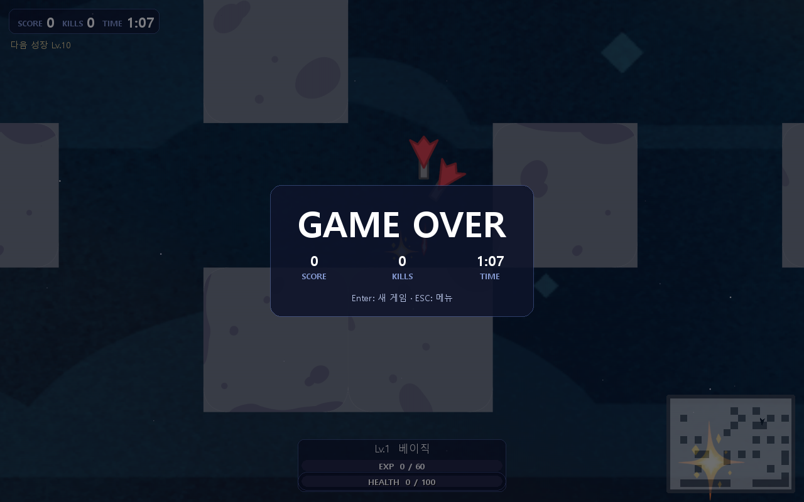
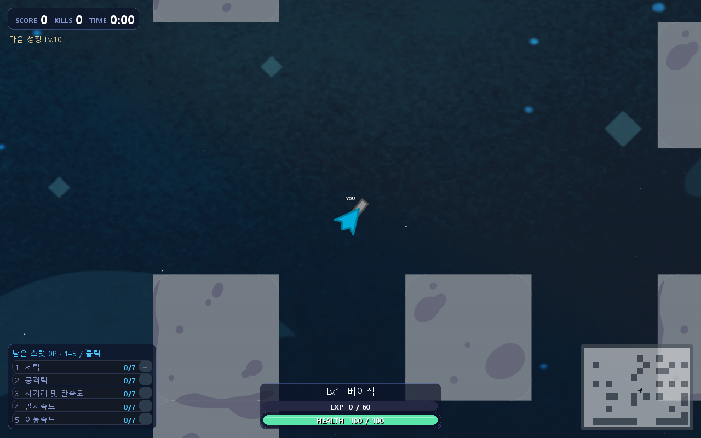

프로토타입 · 수치 하드코딩
004 이후, 무엇을 바꿔서
004 이후, 무엇을 바꿔서
어떤 결론이 났는가
실험 갤러리(index.html)는 폴더별 카드를 나열하지만 "한 실험당 변수 하나"라는 원칙이 실제로 어떤 분기를 만들었는지는 한눈에 안 보입니다. 이 페이지는 각 실험이 부모 체크포인트에서 어떻게 갈라져 나왔는지(계보, lineage)를 004 best 체크포인트(573,440스텝)를 공통 기준점으로 추적합니다. 위 분기도의 상자를 클릭하면 해당 실험 페이지로 이동합니다 — "현재 위치"에 뜬 노드로 지금 어디를 보고 있는지 알 수 있습니다. 수치는 각 실험의 config.json / logs/evaluations.jsonl / confirmation.json에서 그대로 가져왔습니다.
안정성 확인이 왜 필요한가 — 표의 mean 하나만 보면 꾸준히 개선된 것처럼 보일 수 있지만, mean은 20개 dev 시드 중 몇 개의 큰 점수에 쉽게 끌려갑니다. 그래서 각 실험 페이지에 점수·생존시간 분포 막대(p25~p75 구간 · median · mean · max)를 넣고, held-out 확인은 시드별 점수를 표로 그대로 적었습니다.
001~003 (탐색 단계) · 001 계약 검증(배선 점검, 128step) → 002 파일럿(0~65,536step, 점수 8.33→11.67) → 003 지속 학습(65,536~327,680step, 점수 11.67→18.33, 중간 196,608step에서 70.0까지 올랐다가 다시 하락). 아직 안정적인 성장 패턴을 찾기 전 단계라 아래 비교에서는 제외하고 004부터 시작합니다.
004_parallel_continuation
327,680 → 634,880 step기준 체크포인트 확립변경한 것: 003의 체크포인트에서
SubprocVecEnv 병렬 환경으로 이어학습 (환경 자체 변경은 없음, 처리량만 변화)| label | step | score | survival | kills |
|---|---|---|---|---|
| before | 327,680 | 13.25 | 56.96s | 0.05 |
| progress | 450,560 | 65.75 | 65.98s | 0.30 |
| progress (best) | 573,440 | 114.25 | 70.22s | 0.55 |
| after | 634,880 | 87.5 | 78.79s | 0.35 |


held-out(새 시드 6개) 03 체크포인트 대비: 5.00→103.33
held-out 개별 시드 점수 (학습 중 한 번도 안 쓴 시드 6개)
| 740101 | 740202 | 740303 | 740404 | 740505 | 740606 | |
|---|---|---|---|---|---|---|
| parent(003) | 0 | 10 | 0 | 10 | 0 | 10 |
| selected(004@573,440) | 0 | 0 | 210 | 200 | 200 | 10 |
573,440이 끝이 아니라 "이 run의 피크" — 634,880까지 더 돌렸지만 dev 점수가 87.5로 내려가,
best.zip은 573,440으로 고정됨. 이 573,440이 005/006/007 세 실험의 공통 부모가 됨. 안정성: p25가 세 체크포인트 모두 0 — 20개 시드 중 최소 5개는 점수 0으로 끝남. mean은 상위 몇 개 시드(최대 425점)가 끌어올린 값이다.005_same_settings_continuation
573,440 → (819,200에서 중단)크래시 · 폐기변경한 것: 없음 — 573,440에서 같은 설정 그대로 이어학습(의도적 변수 변경이 아니라 "일단 더 돌려본" run)
설정 diff: 없음 —
config.json이 부모(004)와 모든 필드(PPO/환경/보상/프로세스) 동일.| label | step | score | survival | kills | shots |
|---|---|---|---|---|---|
| before | 573,440 | 114.25 | 70.22s | 0.55 | 60.3 |
| progress | 634,880 | 104.0 | 77.10s | 0.45 | 55.0 |
| progress | 696,320 | 75.5 | 70.53s | 0.30 | 52.8 |
| progress | 757,760 | 1.5 | 56.16s | 0.00 | 21.2 |
819,200 평가 직전 PermissionError(13, Access is denied) — report.py의 리포트 파일 교체가 Windows 파일 잠금에 걸렸고, 그 호출이 실제 평가보다 먼저 있어서 819,200 평가 자체가 통째로 누락된 채 중단됨 | |||||
성능 붕괴 패턴: 점수뿐 아니라 shots_fired(60→21)·kills(0.55→0.0)까지 같이 무너짐.
death=-3.0이 교전 보상(0.01~0.02)을 압도해 "교전 회피"로 서서히 drift한 것으로 해석 — 이 가설이 006/007의 분리 실험 설계로 이어짐. 005는 재사용하지 않고 573,440에서 다시 분기.006_lower_learning_rate
573,440 → 880,640 step개선 없음변경한 것:
learning_rate만 0.0003 → 0.0001 (보상 계수는 004와 동일하게 유지)| 바뀐 설정 | 부모(004) | 006 |
|---|---|---|
| learning_rate_override | — (PPO_OPTIONS 0.0003 그대로) | 0.0001 |
위 1개 항목 외 PPO 하이퍼파라미터·GameConfig·ObsConfig·reward_coefficients·num_envs(10)·rollout_size(2560)는 부모와 100% 동일 (parent_metadata() strict 검증 통과).
| label | step | score | survival | kills |
|---|---|---|---|---|
| before | 573,440 | 114.25 | 70.22s | 0.55 |
| progress | 634,880 | 28.75 | 51.70s | 0.10 |
| progress | 757,760 | 65.25 | 81.62s | 0.30 |
| progress | 819,200 | 78.25 | 83.04s | 0.35 |
| after | 880,640 | 67.5 | 84.49s | 0.30 |


held-out(새 시드 6개): parent 68.33=selected 68.33 (둘이 같은 체크포인트)
held-out 개별 시드 점수 (학습 중 한 번도 안 쓴 시드 6개)
| 760101 | 760202 | 760303 | 760404 | 760505 | 760606 | |
|---|---|---|---|---|---|---|
| parent = selected (573,440) | 0 | 210 | 200 | 0 | 0 | 0 |
114.25를 끝까지 한 번도 못 넘김 — "최고 점수 체크포인트"를 매번 저장하는 로직이 전체 run 동안 계속 시작점(573,440)을 best로 유지. 즉 lr을 낮춘 것만으로는 개선이 아니라 그냥 더 느리게 흔들린 것. 생존시간은 꾸준히 늘었지만(70→84s) 점수·킬로 이어지지 않음.
007_higher_combat_reward
573,440 → 880,640 step현재 최고 모델변경한 것: 보상 계수만
score_gain 0.02→0.03, enemy_damage·shape_damage 0.01→0.015 (death=-3.0 그대로, lr도 004와 동일)| 바뀐 설정 | 부모(004) | 007 |
|---|---|---|
| reward_coefficients.score_gain | 0.02 | 0.03 |
| reward_coefficients.enemy_damage | 0.01 | 0.015 |
| reward_coefficients.shape_damage | 0.01 | 0.015 |
death(-3.0)·damage_taken(-0.02)은 그대로. learning_rate_override는 적용 안 함(없음, 004와 동일하게 0.0003) — num_envs(10)·rollout_size(2560)도 동일.
| label | step | score | survival | kills |
|---|---|---|---|---|
| before | 573,440 | 114.25 | 70.22s | 0.55 |
| progress (best) | 634,880 | 119.0 | 78.44s | 0.55 |
| progress | 757,760 | 78.25 | 58.46s | 0.35 |
| after | 880,640 | 66.75 | 67.57s | 0.30 |


held-out(새 시드 6개) parent 004 best 대비: 107.50→171.67 (+59.7%, survival 78.77→76.46s, kills 0.50→0.833)
held-out 개별 시드 점수 (학습 중 한 번도 안 쓴 시드 6개)
| 770101 | 770202 | 770303 | 770404 | 770505 | 770606 | |
|---|---|---|---|---|---|---|
| parent(004 best) | 400 | 0 | 210 | 25 | 0 | 10 |
| selected(007@634,880) | 0 | 0 | 200 | 410 | 10 | 410 |
006/007 중 유일하게 실제 개선 — 보상 가중치만 올려서 634,880에서 피크를 찍었고(dev 119.0, 004의 114.25보다 높음), held-out 재검증에서도 명확히 앞섬. 다만 634,880을 넘겨 880,640까지 더 돌리면 006·005와 같은 패턴으로 다시 꺾임 — 그래서 최종적으로 쓰는 건
final.zip이 아니라 best.zip(634,880). 안정성 주의: 634,880의 median은 5점뿐인데 mean은 119.0 — held-out 6개 시드 중에도 절반(0,0,10)은 거의 무득점이고 나머지(200,410,410)가 평균을 끌어올림. "+59.7%"는 꾸준한 개선이 아니라 상한이 높아진 쪽에 더 가깝다.부모: 007_higher_combat_reward의 best(634,880)에서 이어서 — lr과 보상을 모두 유지한 채 추가 변수(lr 추가 인하 + num_envs 확대) 투입
008_combined_reward_and_lr
634,880 → 939,520 step007을 못 넘음변경한 것: 007의 보상 오버라이드를 유지한 채
learning_rate를 006과 같은 0.0001로 추가 적용 + num_envs 10→14(처리량 확대)| 바뀐 설정 | 부모(007) | 008 |
|---|---|---|
| learning_rate_override | — (0.0003 유지) | 0.0001 |
| number_of_environments | 10 | 14 |
| rollout_size | 2,560 | 3,584 |
| maximum_owned_processes | 12 | 18 |
| checkpoint_interval_steps | 15,360 | 21,504 |
reward_coefficients는 007에서 이미 바뀐 값을 그대로 승계(추가 변경 없음). PPO 하이퍼파라미터·GameConfig·ObsConfig는 동일.
| label | step | score | survival | kills |
|---|---|---|---|---|
| before | 634,880 | 119.0 | 78.44s | 0.55 |
| progress | 763,904 | 61.5 | 80.22s | 0.25 |
| progress (dev 최고) | 828,416 | 122.25 | 67.21s | 0.55 |
| after | 939,520 | 114.25 | 76.43s | 0.50 |


held-out(새 시드 6개): parent 007@634,880 186.67→selected 008@828,416 171.67 (역전, -8.0%)
held-out 개별 시드 점수 (학습 중 한 번도 안 쓴 시드 6개)
| 780101 | 780202 | 780303 | 780404 | 780505 | 780606 | |
|---|---|---|---|---|---|---|
| parent(007@634,880) | 0 | 410 | 300 | 0 | 10 | 400 |
| selected(008@828,416) | 0 | 200 | 10 | 10 | 610 | 200 |
dev 평가에서 속았던 케이스 — 828,416이 dev 20시드에서 007의 피크(119.0)보다도 높은 122.25를 찍어 "best"로 선정됐지만, 신선한 held-out 시드로 재검증하자 007의 634,880(186.67)이 오히려 더 높게 나와 역전됨. 즉 lr을 더 낮추고 env를 늘려 더 오래 돌려도 634,880 근처가 지금 보상/하이퍼파라미터 조합의 한계로 보임. 현재 최고 모델은 007의
best.zip(634,880)으로 유지. 흥미로운 지점: 828,416의 p25(7.5)·median(155)은 사실 007의 634,880보다 훨씬 "안정적"이다(0에 붙지 않음) — dev 20시드에서는 더 일관된 플레이였는데, 6개뿐인 held-out 시드에서는 우연히 더 낮게 나왔을 수 있다. 시드 수가 적을수록 이런 역전이 쉽게 일어난다.